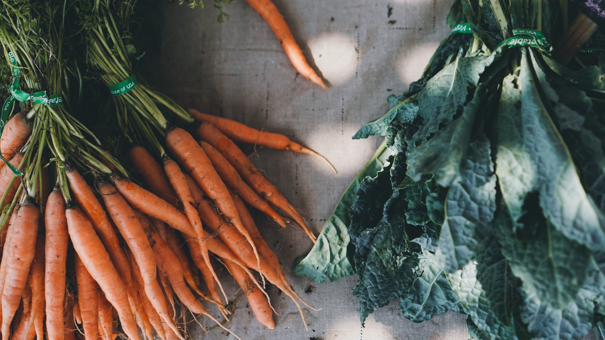

Buying and eating seasonally to your area can be a great way to reduce transport costs.

Centered
Eat the Seasons Website
Local fun
https://www.nytimes.com/crosswords/game/mini
Walking
And if you're out walking... look down. Check out this fun foraging twitter...fresh air and foraging for local goodies!
Tweets by TotallyWildUK